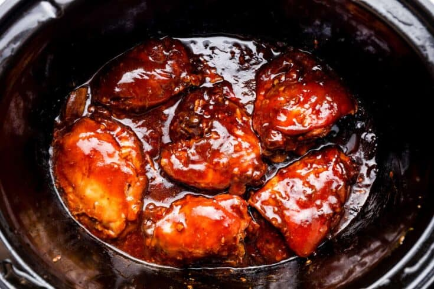

Honey Chicken

Description
This asian inspired honey chicken is set it and forget it! All you need to do after it's cooked
is break it up, make a little rice, and dig in!
Ingredients:
- 2-3 chicken breasts
- salt
- pepper
- 1/2 cup of honey
- 1/4 cup of soy sauce
- 1 Tbs. dried onion flakes
- 2 Tbs. ketchup
- 1 Tbs. vegetable oil
- 1 tsp. minced garlic
- 1/4 tsp. red pepper flakes
- 2 cups instant white rice
Steps:
- Put chicken in crockpot and sprinkle both sides with salt & pepper
- Mix everything else in a bowl and pour over the chicken
- Cook on low for 4 hours
- Cut the chicken into bite sized pieces and put back in the sauce
- Serve over cooked rice